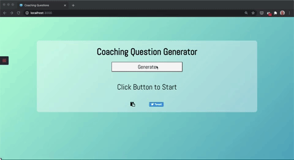

Weather App
React app displaying weather info collected from a 3rd party API. Background changes depending on certain weather conditions using conditional styling.
Tech used: JavaScript, React, Open Weather API, Moment.js, GitHub Pages.
Tech used: JavaScript, React, Open Weather API, Moment.js, GitHub Pages.
Coaching Q Generator

React app to generate coaching questions at random. Includes unit, integration & e2e tests.
Tech used: JavaScript, React, Netlify, Jest, Puppeteer.
Tech used: JavaScript, React, Netlify, Jest, Puppeteer.
Firebasic
Basic web app for registered users to upload files to cloud storage and store metadata in a NoSQL database.
Tech used: JavaScript, Firebase: Authentication, Storage, Cloud Firestore Database and Hosting.
Tech used: JavaScript, Firebase: Authentication, Storage, Cloud Firestore Database and Hosting.
Portfolio
Portfolio site to house my projects and resume.
Tech used: Gatsby (React & GraphQL), Sass, Netlify.
Tech used: Gatsby (React & GraphQL), Sass, Netlify.
TDD & REST
Crude app using RESTful API, axios and JSON Placeholder.
Tech used: JavaScript, axios, promises, Netlify (TDD, Jest).
Tech used: JavaScript, axios, promises, Netlify (TDD, Jest).